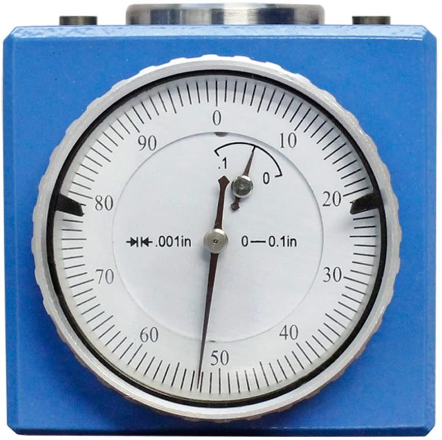

Introduction
==================================
The focus of this lab is to learn how to set up tool lengths and work coordinate
system offsets in a CNC mill and lathe in order to be able to machine a part.
This lab will cover the following topics:
- Jogging all axes of the machine
- How to use the tool setter
- Setting tool offsets using the tool setter
- Using a 3D probe to set X, Y, and Z work offsets.
1 - Tool Length
==================================
In this section it will be described how to load the tools into the machine that
will be used in our program.
How to use different menus in the machine will also be discussed in this section
as well as how to jog the different axes of the machine to move the tools to a
desired location.
Also this section will focus on how to use the Z offset tool setter,shown below,
to measure and set the tool offsets in the machine.

|||||||||||||||||||||||||||||||||||||||||||||||||||||||||||||
|| MILL ||
[[y! Prerequisites
Make sure you have all the tools needed for your program ready as well as a tool
setter before starting this section of the lab.
]]
Loading Tools
-----------------------------
- DESCRIBE HOW TO RELEASE/LOAD A TOOL
- USE MDI MENU TO CHANGE TO DIFFERENT TOOL SLOTS
- LOAD TOOLS IN SAME ORDER AS SETUP SHEET FROM CAM PROGRAM
Measuring tool offsets
-----------------------------
- DESCRIBE HOW TO USE JOG MODE AND DIFFERENT INCREMENTS
- THEORY OF OPERATION OF TOOL SETTER
- PLACEMENT OF TOOL SETTER
- JOG TOOL TO TOOL SETTER AND MEASURE TOOL OFFSET
- REPEAT FOR EVERY TOOL
|| LATHE ||
[[y! Prerequisites
Make sure you have all the tools needed for your program ready as well as a tool
setter before starting this section of the lab.
]]
Loading Tools
-----------------------------
- DESCRIBE HOW TO RELEASE/LOAD A TOOL
- USE MDI MENU TO CHANGE TO DIFFERENT TOOL SLOTS
- LOAD TOOLS IN SAME ORDER AS SETUP SHEET FROM CAM PROGRAM
Measuring tool offsets
-----------------------------
- DESCRIBE HOW TO USE JOG MODE AND DIFFERENT INCREMENTS
- THEORY OF OPERATION OF TOOL SETTER
- PLACEMENT OF TOOL SETTER
- JOG TOOL TO TOOL SETTER AND MEASURE TOOL OFFSET
- REPEAT FOR EVERY TOOL
|||||||||||||||||||||||||||||||||||||||||||||||||||||||||||||||||||
2 - Work Coordinates
==================================
WRITE AN INTRO TO WORK COORDINATES AND WHY THEY ARE IMPORTANT.
QUICK SUMMARY OF WHAT THIS SECTION WILL COVER.
[[y! Prerequisites
Make sure the stock to be machined has already been properly loaded into the
vice.
]]
|||||||||||||||||||||||||||||||||||||||||||||||||||||||||||||
|| MILL ||
- EXPLAIN THEORY OF OPERATION OF 3D PROBE
- SELECT THE RIGHT WCS BEING USED IN CAM PROGRAM
- LOAD 3D PROBE IN EMPTY TOOL SLOT
- EXPLAIN HOW TO USE PROBE
- HOW TO ENTER X, Y, AND Z WORK OFFSETS INTO THE DESIRED WCS
- SETTING Z OFFSET USING THE TOOL SETTER
|| LATHE ||
DESCRIBE STEPS TO SET WCS IN LATHE
|||||||||||||||||||||||||||||||||||||||||||||||||||||||||||||||||||